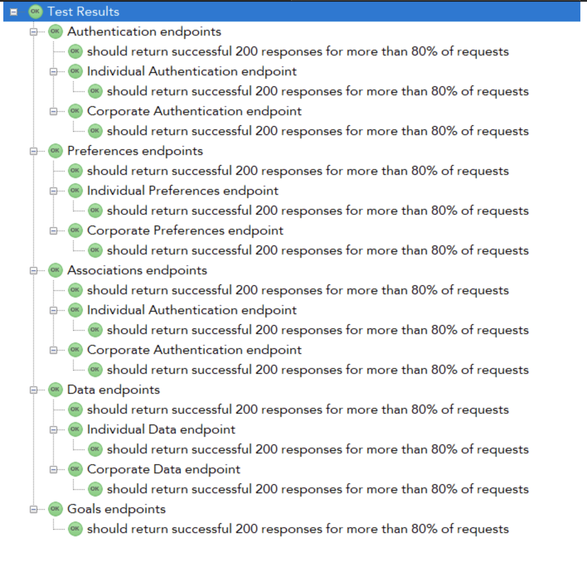
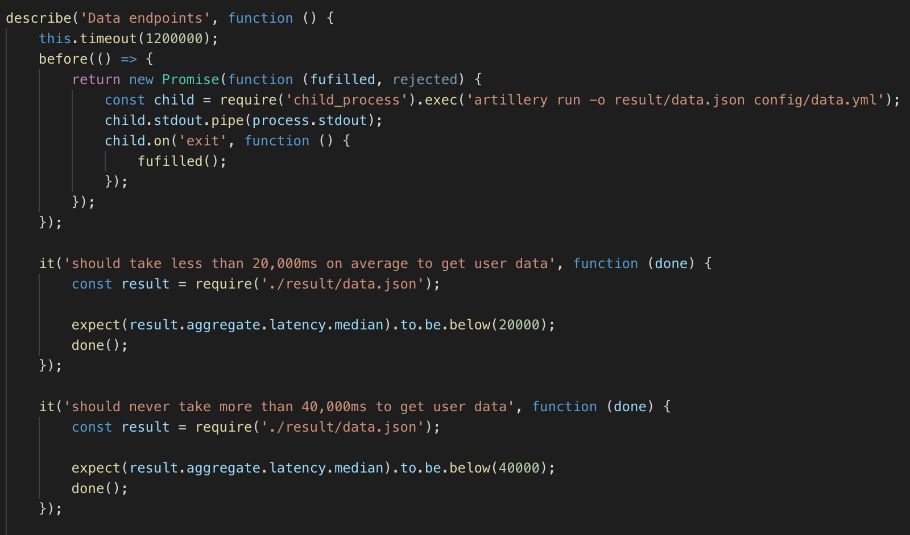

TESTING
Testing Strategy
?
Stress testing
A part of this project was to show that it can be used in a professional healthcare industry such as Nuffield Health and
thus stress tests have been implemented which would confirm that the system could support reasonable loads (around 10,000 users), without crashing.
The main technology used was Artillery JS along with a set of user interactions. Finally, this shows that the system can operate irrespective of the amount of requests.

Performance testing
Efficiency is always important, making sure that the users login and get their data as fast as possible is always important and thats
why a lot of performance tests have been implemented. The following cases has been considered and were successful upon testing
These tests have been carried for both
- Individual Users
- Corporate Users
- System should take less than 0.5s on average to log in
- System should never take more than 1s on average to log in
- System should take less than 5s on average to retrieve user preferences
- System should never take more than 10s to retrieve preferences
- System should take less than 6s on average to get user-company associations
- System should never take more than 10s to get user-company associations
- System should take less than 20s on average to get user data
- System should never take more than 40s to get user data

Integration testing
Unit testing
Compatability testing
Responsive design testing
Automated testing?
User acceptance testing
Test cases
Feedback from testers and client